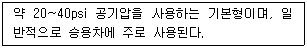
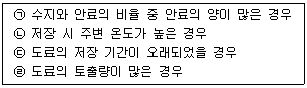
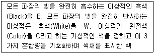

자동차보수도장기능사 (2012-10-20 기출문제)
1과목: 임의 구분
1. 보기 내용에서 타이어 사용공기압에 따라 분류한 것으로 적합한 것은?

- 저압타이어
- 고압타이어
- 초저압타이어
- 초고압타이어
(정답률: 88%)

2. 모노코크 바디어 각부 구조 중 리어바디에 속하지 않는 것은?
- 트렁크 리드 로크
- 레인 포스
- 테일 게이트
- 한지
(정답률: 62%)
3. 국제단위계(SI단위)에서 힘의 단위로 맞는 것은?
- N
- m/s2
- Pa
- N·m
(정답률: 85%)
4. 기관의 냉각장치에서 엔진온도가 과열되면 냉각수가 보조탱크로 배출되고 온도가 내려가면 진공 밸브가 열려 보조탱크의 냉각수를 유입시키는 작용을 하는 것은?
- 방열 핀
- 서모스탯
- 압력식 캡
- 라디에이터
(정답률: 69%)
5. 자동차에서 흔히 사용하는 1마력(PS)을 와트(W)로 환산하면?
- 약 360 W
- 약 632 W
- 약 735 W
- 약 860 W
(정답률: 86%)
6. 자동차 차체 프레임(frame)의 요구조건이 아닌 것은?
- 부재의 경량화
- 충분한 강성과 강도
- 분포하중의 균일화
- 우수한 기밀성
(정답률: 69%)
7. 자동차의 각종 등화장치에 관련내용으로 틀린 것은?
- 전조등(Head lamp) : 야간 운행을 위한 조명
- 안개등(Fog lamp) : 안개 속에서 운행을 위한 조명
- 실내등(Room lamp) : 차 실내를 조명
- 계기등(instrument lamp) : 후진 방향을 조명
(정답률: 93%)
8. 흡기밸브는 상사점 전 10~30°에서 열리고 배기밸브는 상사점 후 10~30°에서 닫힐 때 흡배기밸브가 동시에 열리게 되는 것을 무엇이라고 하는가?
- 밸브 바운드(bound)
- 블로 다운(blow-down)
- 밸브 오버랩(over lap)
- 블로 바이(blow-by)
(정답률: 88%)
9. 타이어 규격 표시 “2⑤ 55 R17”에서 55의 의미는?
- 최고속도 허용 시간당 55 마일을 의미함
- 타이어 폭에 대한 높이의 편평비가 55%임을 의미함
- 타이어 호칭 치수가 고압 타이어임을 의미함
- 튜브가 없는 튜브레스 타이어를 의미함
(정답률: 92%)
10. 물의 끓는점을 100℃로 하고 얼음의 녹는점을 0℃로 정하여 그 사이를 100등분한 온도를 무엇이라 하는가?
- 섭씨온도
- 화씨온도
- 절대온도
- 랭킨온도
(정답률: 84%)
11. 다음 중 저비점 용제의 종류인 것은?
- 아세톤, MEK, 메틸알코올, 에틸아세테이트
- 톨루엔, 아밀아세테이트, 부틸아세테이트, 부틸알코올
- 부틸셀로솔브, 백등유, 미네랄스피릿, 셀로솔브 아세테이트
- 이소부틸알코올, 초산부틸, 초산아밀, 크실렌
(정답률: 80%)
12. 컴파운딩 공정의 주된 목적은?
- 도막 보호
- 칼라 샌딩 연마 자국 제거
- 도막의 은폐
- 스월 마크 제거
(정답률: 62%)
13. 메탈릭 색상의 조색시 주의사항이 아닌 것은?
- 조색시 먼저 많이 소요되는 색과 밝은 색부터 혼합하도록 한다.
- 원색의 첨가량을 최소화하여 선명한 색상을 만든다.
- 서로 다른 타입의 토료를 혼합 사용하도록 된다.
- 도료제조시 도장 할 양의 80% 정도만 만들고 색을 비교하여 추가적으로 미조색하면서 도료의 양을 맞춘다.
(정답률: 74%)
14. 프라이머-서페이서 도장의 목적에 해당하지 않는 것은?
- 일정한 기준도막 형성 및 층간 부착성을 향상시킨다.
- 중간층에 있어서 치밀한 도막의 두께를 형성한다.
- 상도 도막의 두께를 최대한 두껍게 형성한다.
- 연마에 있어서 노출된 강판에 대한 방청 효과가 있다.
(정답률: 82%)
15. 흐름 현상이 일어나는 원인이 아닌 것은?
- 신너 증발이 빠른 타입을 사용한 경우
- 한 번에 두껍게 칠하였을 경우
- 신너를 과다 희석 하였을 경우
- 스프레이건 거리가 가깝고 속도가 느린 경우
(정답률: 81%)
16. 에어 스프레이 방법의 특징으로 맞지 않는 것은?
- 보수용 도료에 적용할 수 있다.
- 도착 효율이 좋다.
- 비교적 가격이 싸고 취급도 간단하다.
- 깨끗하고 미려한 도막을 얻을 수 있다.
(정답률: 51%)
17. 방독면 사용 전 주의사항으로 바른 것은?
- 규정된 정화통의 여부
- 분진 같은 이물질 제거
- 흡기와 배기의 조절구에 묻은 수분제거
- 고무제품의 세척
(정답률: 68%)
18. 마스킹 페이퍼와 마스킹 테이프를 한곳에 모아둔 장치로 마스킹 작업 시에 효율적으로 사용하기 위한 장치는?
- 틈새용 마스킹재
- 마스킹용 플라스틱 스푼
- 마스킹 커터 나이프
- 마스킹 페이퍼 편리기
(정답률: 91%)
19. 3코트 펄 조색 작업시 베이스의 건조가 불충분하여 생길 수 있는 현상이 아닌 것은?
- 이색발생
- 얼룩발생
- 주름발생
- 핀홀발생
(정답률: 59%)
20. 도료를 도장하여 건조할 때 도막에 바늘구멍과 같이 생기는 현상을 핀홀이라고 한다. 다음 중 핀홀의 원인이 아닌 것은?
- 두껍게 도장한 경우
- 세팅타임을 너무 많이 주었을 때
- 점도가 높은 경우
- 속건 신너 사용 시
(정답률: 73%)
2과목: 임의 구분
21. 자동차 부품용 플라스틱 소재를 용접하는 방법이 아닌 것은?
- 열풍 용접
- 에어리스 용접
- 접착제 용접
- 아르곤 용접
(정답률: 69%)
22. 도료 저장 중(도장 전) 침전 결함의 발생 원인을 모두 고른 것은?

- ㉠, ㉡
- ㉠, ㉡, ㉢
- ㉠, ㉡, ㉢, ㉣
- ㉢, ㉣
(정답률: 79%)
23. 자동차 생산라인에서 하도용으로 가장 적합한 도료는 어떤 것이 좋은가?
- 수용성 전착도료
- 투명에 가까운 프라이머 도료
- 분말화된 분체도료
- 우레탄에 가까운 투명도료
(정답률: 54%)
24. 자동차 보수 도장에 일반적으로 가장 많이 사용하는 퍼티는?
- 오일 퍼티
- 폴리에스테르 퍼티
- 에나멜 퍼티
- 래커 퍼티
(정답률: 76%)
25. 10℃ 이하의 환경에서 주로 사용하는 희석제는?
- 동절형
- 표준형
- 느린 건조형
- 하절형
(정답률: 80%)
26. 보수도장 후 출고된 자동차가 크리어층에 균열이 생기고 갈라져 있었다면 어떤 결함인가?
- 도막박리
- 크랙현상
- 녹
- 부풀음
(정답률: 81%)
27. 보수 도장에서 도막의 두께를 두껍게 도장할 경우 다음 조건 중 틀린 것은?
- 도료의 토출량을 많게 함
- 건의 이동 속도를 느리게 함
- 건의 거리를 가깝게 함
- 패턴의 폭을 넓게 함
(정답률: 83%)
28. 명도가 다른 두색이 서로의 영향으로 인하여 어떤 현상을 나타내는가?
- 밝은 색은 어둡게 보인다.
- 밝은 색은 더 밝게 보인다.
- 어두운 색은 밝게 보인다.
- 두 색은 별다른 변화가 없다.
(정답률: 75%)
29. 다음 중 구도막의 제거작업 순서로 맞는 것은?
- 탈지작업 – 세차작업 – 손상부위 점검 및 표시작업 – 손상부위 구도막제거작업 – 단낮추기(표면조정작업) - 탈지작업 – 화성피막작업
- 세차작업 – 탈지작업 – 손상부위 점검 및 표시작업 – 손상부위 구도막제거작업 – 단낮추기(표면조정작업) - 탈지작업 – 화성피막작업
- 손상부위 구도막제거작업 – 세차작업 – 탈지작업 – 손상부위 점검 및 표시작업 – 단낮추기(표면조정작업) - 탈지작업 – 화성피막작업
- 단낮추기(표면조정작업) – 탈지작업 – 화성피막작업 – 손상부위 구도막제거작업 – 세차작업 - 탈지작업 – 손상부위 점검 및 표시작업
(정답률: 70%)
30. 자동차의 색상과 테스트 시편의 색상비교에 큰 영향을 주지 않는 것은?
- 비교 각도
- 비교 온도
- 광원의 조건
- 비교 장소
(정답률: 70%)
31. 다음 점도계 중 유출식 점도계가 아닌 것은?
- 스토머 점도계
- 오스왈드 점도계
- 레드우드 점도계
- 포오드컵 점도계
(정답률: 52%)
32. 조색이 잘 안 될 때에 조치할 사항과 가장 거리가 먼 것은?
- 색상을 바꾼다.
- 견본색상 배치를 바꾸어 본다.
- 대조되는 색을 놓아 본다.
- 시편을 같은 크기로 조색한다.
(정답률: 70%)
33. 압축공기 점검사항으로 맞는 것은?
- 공기탱크 수분으 1개월 마다 배출시킨다.
- 매일 윤활유량을 점검하고 2년에 1회 교환한다.
- 년1회 공기여과기를 점검하고 세정한다.
- 월1회 구동벨트의 상태를 점검하고 필요하면 교환한다.
(정답률: 59%)
34. 보수도장에서 부분도장하여 분무된 색상과 원 색상의 차이가 육안으로 나타나지 않도록 하거나 색상이색을 최소화하는 작업을 무엇이라 하는가?
- 클리어 코트(clear coat)
- 웨트 코트(wet coat)
- 숨김 도장(blenging coat)
- 드라이 코트(dry coat)
(정답률: 85%)
35. 조색 작업 시 주의사항 중 틀린 것은?
- 조색 전 도료를 교반기로 충분히 교반하여 사용한다.
- 조색실은 적절한 환기 시설이 있어야 한다.
- 용제 및 도료는 사용하지 않을 경우 반드시 뚜껑을 닫는다.
- 도료가 눈에 들어가면 빨리 희석제로 닦아낸다.
(정답률: 87%)
36. 도료건조의 종류라 할 수 없는 것은?
- 냉각건조
- 액화건조
- 산화건조
- 중합건조
(정답률: 51%)
37. 다음 플라스틱 범퍼의 보수 방법이 아닌 것은?
- 가열 수정 작업
- 용접 보수 작업
- 우레탄 보수 작업
- 접착제 보수 작업
(정답률: 44%)
38. 습식연마 작업용 공구로서 적절하지 않는 것은?
- 받침목
- 구멍 뚫린 패드
- 스펀지 패드
- 디스크 샌더
(정답률: 55%)
39. 렌치 작업의 주의사항으로 틀린 것은?
- 렌치의 크기는 너트보다 조금 큰 치수를 사용한다.
- 렌치를 너트에 깊이 물린다.
- 높거나 좁은 장소에서는 몸을 안전하게 한 다음 작업한다.
- 렌치를 해머로 두드려서는 안 된다.
(정답률: 87%)
40. 실내에서 엔진을 사용할 때 특히 주의해야 할 사항에 해당되는 것은?
- 소음
- 일산화탄소(CO)
- 진동
- 작업 시간
(정답률: 87%)
3과목: 임의 구분
41. 인화성이 가장 큰 물질은?
- 신너
- 알코올
- 경우
- 솔벤트
(정답률: 70%)
42. 기계작업에서 작업자가 취하여야 할 사항으로 틀린 것은?
- 구멍깎기 작업시 운전도중 구멍속을 청소한다.
- 치수측정은 운전을 멈춘 후 측정토록 한다.
- 운전 중에는 다듬면 검사를 절대로 금한다.
- 베드 및 테이블의 면을 공구대 대용으로 쓰지 않는다.
(정답률: 89%)
43. 탁상드릴로 둥근 공작물에 구멍을 뚫을 때 공작물 고정방법으로 가장 적합한 것은?
- 손으로 잡는다.
- 바이스 플라이어로 잡는다.
- V블럭과 클램프로 잡는다.
- 헝겊에 싸서 바이스에 고정한다.
(정답률: 71%)
44. 유기용제 중독에 따른 예방대책으로 잘못된 것은?
- 마스크 착용
- 작업장의 용제 증기 축적
- 작업자 교대 및 작업시간 단축
- 위험성이 적은 도료 및 용제 선택
(정답률: 77%)
45. 도장부스가 갖추어야 할 기능으로 틀린 것은?
- 안전한 온도상승 조절 및 공급기능이 확실하고 경제성을 제공해야 한다.
- 불순물과 먼지의 제거를 위해 통풍장치와 여과장치가 완전해야 한다.
- 도장작업자의 보호를 위해 여과된 공기의 공급이 이루어져야 한다.
- 도장 작업시 바닥에 페인트 먼지와 유해한 페인트를 제거할 수 있는 장치가 필수적이며 배기 필터는 매일 교환해 주어야 한다.
(정답률: 67%)
46. 도료보관 방법으로 가장 적합한 것은?
- 직사광선이 드는 내화구조의 창고에 보관
- 햇빛이 적당히 비치는 밀폐된 창고에 보관
- 통풍, 차광이 알맞은 내화구조의 창고에 보관
- 인화방지를 위해 밀폐 창고를 이용
(정답률: 82%)
47. 스프레이건 세척작업 시 착용해야 할 보호구로 적합하지 않은 것은?
- 보안경
- 귀마개
- 방독마스크
- 내용제성 장갑
(정답률: 85%)
48. 공기압축기에서 생산된 공기 중의 수분을 제거하고 사용하는 곳에서 압력을 일정하게 조정할 수 있는 기능을 가진 기기는?
- 스프레이 부스
- 에어 트랜스포머
- 에어 필터
- 에어 컴프레서
(정답률: 69%)
49. 감법혼색의 3원색을 등량(等量)혼합 할 때 이론적인 색은?
- 흰색
- 자주
- 검정
- 청록
(정답률: 59%)
50. 색상환에서 반대색끼리 나타날 수 있는 대비는?
- 명도대비
- 보색대비
- 색상대비
- 채도대비
(정답률: 78%)
51. 빨간색의 연상과 상징으로 가장 거리가 먼 것은?
- 정열
- 위험
- 광명
- 혁명
(정답률: 79%)
52. 먼셀 기호 5YR 6/12는 무슨 색인가?
- 노랑
- 주황
- 빨강
- 자주
(정답률: 74%)
53. 동화현상(베졸트 효과)의 설명 중 틀린 것은?(오류 신고가 접수된 문제입니다. 반드시 정답과 해설을 확인하시기 바랍니다.)
- 한 색이 다른 색 위에 넓혀가는 것처럼 보인 전파효과라고도 한다.
- 특정색이 인접되는 색의 영향을 받아 인접 색에 먼색이 되어 보이는 현상
- 색이 다른 색에 둘러싸여 있을 때 둘러싸여 있는 색이 주위의 색과 비슷해 보이는 현상
- 백색선의 형태를 그리면 배경색이 밝게 보인다.
(정답률: 47%)
54. 다음 중 활동적인 느낌을 주는 색이 아닌 것은?
- 적색
- 주황
- 노랑
- 파랑
(정답률: 73%)
55. 색의 3속성에 대한 설명으로 옳은 것은?
- 색의 3속성 중 채도가 우리 눈에 대하여 감각이 가장 예민하다.
- 빛의 반사율이 높은 색일수록 명도가 높다.
- 색상의 차이가 작은 색 관계를 보색이라 말한다.
- 채도란 색이 차갑거나 따뜻하게 느껴지는 정도를 말한다.
(정답률: 55%)
56. 다음의 내용을 설명한 색체계는?

- 오스트발트 색체계
- NCS 색체계
- 먼셀 색체계
- PCCS 색체계
(정답률: 68%)
57. 파랑 순색에 회색의 혼입량이 단계적으로 많아지면?
- 청색이 되며 채도가 점점 낮아진다.
- 청색이 되며 채도가 점점 높아진다.
- 탁색이 되며 채도가 점점 높아진다.
- 탁색이 되며 채도가 점점 낮아진다.
(정답률: 61%)
58. 다음 중 색료혼합의 3원색이 아닌 것은?
- 마젠타
- 노랑
- 시안
- 빨강
(정답률: 73%)
59. 먼셀(Munsell) 색체계의 기본색상 수는?
- 10색상
- 24색상
- 28색상
- 48색상
(정답률: 66%)
60. 유사색상의 배색은?
- 활동적이며 대조적인 느낌
- 어둡고 무거운 느낌
- 강하고, 정적이며 대비적인 느낌
- 자연스럽고 안정된 조화로운 느낌
(정답률: 77%)